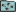
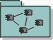

Artifacts >
Artifacts >
 Implementation Artifact Set >
Implementation Artifact Set >

Build
 Artifacts >
Implementation Artifact Set >
Artifact:
| |||||||||||||||||||||||||||
 Build |
A build is an operational version of a system or part of a system that demonstrates a subset of the capabilities to be provided in the final product. A build comprises one or more components (often executable), each constructed from other components, usually by a process of compilation and linking of source code. |
| UML representation: | Package in the implementation model (either its top-level package or an implementation subsystem), stereotyped as «build». |
| Role: | Integrator |
| Input to Activities: | Output from Activities: |
The purpose of a build, constructed from other components in the implementation model, is to deliver a testable subset of the run-time functions and capabilities of the system. The Rational Unified Process (RUP) suggests that a sequence of builds be constructed during an iteration, adding capability with each, as components from implementation subsystems are added or improved. Builds can be constructed at all levels of a system, encompassing single or multiple subsystems, but in the RUP, we are concerned in particular with the builds that are defined in the Artifact: Integration Build Plan, because these are the stepping stones to the completion of the iteration. If the system size or complexity warrants it, the Integration Build Plan can be refined into multiple plans, covering individual subsystems.
Note that informal builds can be constructed by an implementer for several reasons—unit testing, for example - using components from the implementer's private development workspace and the subsystem and system integration workspaces, as appropriate. However, as the term is used here, builds are constructed by an integrator, from identified versions of components delivered by the implementers into the subsystem or system integration workspaces, as defined in the Artifact: Integration Build Plan.
|
Property Name |
Brief Description |
UML Representation |
| Description | A brief textual description of the build | Tagged value, of type "short text" |
| Implementation Subsystems | The subsystems represented in the build | Owned via the meta-association "represents", or recursively via the meta-aggregation "owns" |
| Components | The components in the build, owned by the subsystems | Owned recursively via the meta-aggregation "owns" |
| Integration Build Plan Reference | Reference to the detailed build description in the corresponding Integration Build Plan | Tagged value |
Builds will be constructed as defined in the Artifact: Integration Build Plan for each iteration. The RUP does not require any particular timing or frequency: these are selected to suit a project's specific needs. It is certainly possible, with the right degree of automation, to adopt a strategy of daily builds, taking a steady stream of components from the implementers, integrating these and testing the resulting build overnight. This will not suit all projects, particularly those that are large and require lengthy regression testing.
The Integrator is responsible for the production of builds. If the development is planned around subsystems (with associated teams), which are then integrated into the system, there may be several individuals playing the role of Integrator, perhaps, for example, one in each subsystem team (to do subsystem-level integration) and one to do system-level integration.
Builds are obviously mandatory, however, the kinds of builds that a project produces will change over the lifecycle. In the inception phase, the concern may be to produce prototypes as a way to better understand the problem or communicate with the customer; in elaboration, to produce a stable architecture, and in construction, to add functionality. In transition, the focus shifts to ensuring that the software reaches deliverable quality.
|
Rational Unified
Process
|